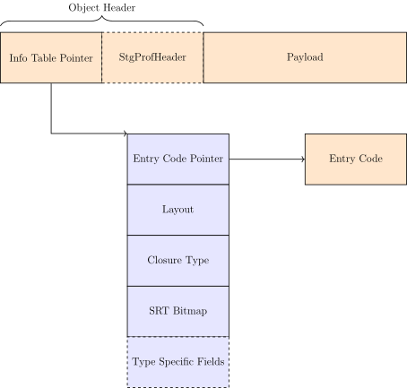
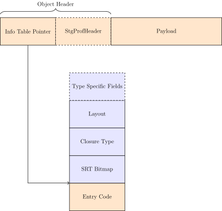

2.1.3. The Linux perf utility¶
This chapter demonstrates the use of the linux perf utility to understand the
low-level details of a simple Haskell program and how a memory layout
optimization that GHC performs, called tables-next-to-code, affects the performance of that
program. This chapter is not an exhaustive exploration of perf. However,
after reading this chapter one will be able to understand perf’s output, act
upon its output and employ perf on their own Haskell programs.
2.1.3.1. What is Tables-Next-to-Code¶
Tables-next-to-code (TNTC) is a memory layout optimization in GHC that has been
used for a very long time [1]. Every heap object has an object header followed
by a payload. The contents of the header depends on the kind of build and the
type of object. For example, a profiling build will include StgProfHeader,
while a parallel build adds an additional word to the header only for thunks
(not shown). The most important field is the info table pointer which points
the heap object’s info table. The info table is what the “tables” in
tables-next-to-code refers to.
Info tables store meta-information about the heap object and are central to the
execution model of the STG machine and consequently the runtime system. Just as
the contents of the header change by the type of object so does the contents of
the info table. For example, a PAP add fields to track the number of
arguments left to apply, the number of arguments that have been applied, and a
pointer that logs the location of the caller. However, four fields in the entry
table are common to all info tables. These are the layout of the object,
which describes the layout for the garbage collector; the Closure Type,
which is a constant that describes the kind of closure, for example, a
Thunk, Data Constructor, PAP etc.; the SRT bitmap,
which the garbage collector requires to collect CAF’s. Lastly, the info
table will hold the entry code pointer for the heap object if one exists
[2] . For more see InfoTables.h and Closures.h for exact details and variants.
Here is a depiction of the heap object layout without tables-next-to-code enabled. Code is represented in orange and data in blue. Boxes which have a dashed outline change depending on the type of heap object and build:

Tables-next-to-code does two things: first it removes the entry code pointer and
places the type specific fields before the Closure Type, and second, it
moves the entry code itself to the address immediately after the info table and
sets the info table pointer to the address of the entry code. This setup allows
the runtime system to save a pointer indirection because the info table pointer
now points to the entry code. Thus, when jumping to the entry code, which is a
common operation, the runtime system saves a single indirection, but can still
reference the fields of the info table through a negative memory offset from
the info table pointer.
Here is a depiction with tables-next-to-code enabled:

The key change is that the info table pointer points to the entry code, while the rest of the info table can still be referenced via negative offsets from the entry code address.
2.1.3.2. So What is the Problem?¶
Tables-next-to-code has worked well for GHC for many years. However, it requires
precise control over the placement of data and code in object files which is
problematic for certain backends such as the LLVM backend. In addition, tables-next-to-code,
while good, precludes other optimization strategies that GHC might use. For
example, one could envision putting all info tables in a global offset table or
coalescing the tables into a single section in the object file. Such a strategy
might lead to better branch prediction, and therefore improved runtime
performance on modern hardware. In addition to other strategies, tables-next-to-code creates
far reaching and non-obvious effects in the compiler. For example, GHC does not
typically generate call or ret instructions [3].
2.1.3.3. Assessing the impact of tables-next-to-code¶
We’ll compare two GHC’s, both will be default [4] builds; one built with
tables-next-to-code enabled, which I’ll call TNTC and one without, which I’ll call
NO-TNTC. To compare the two we’ll run GHC’s nofib benchmark suite, and use
perf to measure hardware and software events (more on these events later
Unfortunately, a bug
prevents us from compiling both GHC’s with DWARF symbols. So we’ll only
be able to annotate GHC’s assembly output with the tables-next-to-code enabled GHC. All tests
will be run on a local machine running:
$ screenfetch -n
doyougnu@7thChamber
OS: NixOS 23.11.20240312.51063ed (Tapir)
Kernel: x86_64 Linux 6.7.9-xanmod1
Uptime: 4h 36m
Packages: 9119
Shell: fish 3.7.0
Resolution: 3000x1920
WM: XMonad
GTK Theme: Breeze-Dark [GTK2/3]
Icon Theme: breeze
Font: Sans Serif 10
Disk: 608G / 1.3T (50%)
CPU: AMD Ryzen 7 2700X Eight-Core @ 8x 3.7GHz
GPU: NVIDIA GeForce GTX 1080 Ti
RAM: 6562MiB / 64217MiB
that is set up for reproducible benchmarks.
Lastly, we’ll alter perf_event_paranoid so that we can run perf and get
data as a normal user:
sudo sysctl -w kernel.perf_event_paranoid=0
Note that this is not safe setting even though it not a persistent change and
will be reset when you reboot your machine. Note that if you do not alter
perf_event_paranoid you’ll receive partial output from perf stat or have
to run all perf commands with sudo. For example, metrics such as
context-switches will be reported as 0 if perf_event_paranoid is greater
than 0.
2.1.3.4. How does Tables Next to Code Affect Performance¶
Below is a selection of the generated table from nofib which compares the
compilers on a series of small programs; typically each program is only a module
or two:
NoFib Results
-----------------------------------------------------------------------------
Program Size Allocs Runtime Elapsed TotalMem
-----------------------------------------------------------------------------
CS +5.7% 0.0% 0.068 0.068 0.0%
CSD +5.6% 0.0% -4.7% -4.7% 0.0%
FS +5.8% 0.0% +7.3% +7.2% 0.0%
S +5.7% 0.0% -0.0% -0.1% 0.0%
VS +5.7% 0.0% +12.2% +12.2% 0.0%
VSD +5.5% 0.0% 0.005 0.005 0.0%
VSM +5.7% 0.0% 0.106 0.107 0.0%
anna +7.0% 0.0% +12.2% +12.3% 0.0%
ansi +3.2% 0.0% +0.6% +0.6% 0.0%
atom +3.5% 0.0% +4.3% +4.2% 0.0%
awards +3.3% 0.0% -7.1% -7.1% 0.0%
banner +2.6% 0.0% +26.2% +26.1% 0.0%
bernouilli +3.2% 0.0% +8.0% +8.0% 0.0%
boyer +3.2% 0.0% +14.3% +14.3% 0.0%
boyer2 +3.4% 0.0% +22.6% +22.6% 0.0%
bspt +4.1% 0.0% +7.4% +7.4% 0.0%
primes +3.0% +20.7% +55.2% +55.1% +9.1%
simple +5.0% 0.0% +7.1% +7.1% -6.9%
...
many more...
A minus indicates that NO-TNTC performed better than TNTC. These results
are expected; tables-next-to-code tends to outperform NO-TNTC because it saves a pointer
indirection in the runtime’s evaluation of heap objects. Let’s zoom into two
benchmark programs that show the largest signal: primes which shows TNTC
performing 55% faster than NO-TNTC, and awards which shows NO-TNTC
performing 7% faster than TNTC. We’ll focus on awards because we want to
understand why exactly tables-next-to-code degrades for this exact program.
2.1.3.5. Awards¶
Here is the full awards program:
import QSort
import Data.List((\\))
import System.Environment
import Control.Monad
-- Generate all possible permutations of length m from a list of scores
perms m [] = []
perms 1 l = map (: []) l
perms m (n:ns) = map ((:) n) (perms (m-1) ns) ++ perms m ns
-- Find the (sorted) list of possible awards for a list of scores
awards scores =
award ("Gold",70) ++ award ("Silver",60) ++ award ("Bronze",50)
where sumscores = map (\ p -> (sum p, p)) (perms 3 scores)
atleast threshold = filter (\(sum,p) -> sum >= threshold) sumscores
award (name,threshold) = map (\ ps -> (name,ps)) (sort (atleast threshold))
-- Find all possible awards for a list of scores, counting each score once only
findawards scores | null theawards = []
| otherwise = firstaward : findawards (scores \\ perm)
where firstaward@(award,(sum,perm)) = head theawards
theawards = awards scores
-- Find the awards for all competitors, each competitor is a pair of
-- (Name, list of scores)
findallawards competitors =
map (\ (name,scores) -> (name,findawards scores)) competitors
competitors i =
[ ("Simon",[35,27,40,i,34,21])
, ("Hans",[23,19,45,i,17,10,5,8,14])
, ("Phil",[1,18,i,20,21,19,34,8,16,21])
, ("Kevin",[9,23,17,54,i,41,9,18,14])
]
main = do
(n:_) <- getArgs
forM_ [1..read n] $ \i -> do
print (findallawards (competitors (i `mod` 100)))
Notice that the only higher-ordered function is map and that all of the
function arguments to map are known function’s because they are
lambdas. Note that this implementation does use a quick sort implementation
defined in QSort that I have elided.
2.1.3.6. Inspecting with Perf¶
To investigate we’ll compile and run the program in perf. Perf is a
statistical profiler that outputs key CPU counters (these counters are called
PMC’s
for the curious).
We begin with perf stat to get an overview of system behavior:
TNTC:
$ ../../../_build/stage1/bin/ghc -fforce-recomp -O2 Main.hs
$ perf stat -- ./Main 1000000 > /dev/null
Performance counter stats for './Main 1000000':
74,973.30 msec task-clock # 0.998 CPUs utilized
13,878 context-switches # 185.106 /sec
326 cpu-migrations # 4.348 /sec
1,343 page-faults # 17.913 /sec
304,754,865,610 cycles # 4.065 GHz
4,568,540,020 stalled-cycles-frontend # 1.50% frontend cycles idle
30,297,886,463 stalled-cycles-backend # 9.94% backend cycles idle
446,573,548,830 instructions # 1.47 insn per cycle
# 0.07 stalled cycles per insn
93,343,159,669 branches # 1.245 G/sec
2,225,134,283 branch-misses # 2.38% of all branches
75.094121462 seconds time elapsed
74.605982000 seconds user
0.360473000 seconds sys
This output is particular to my machine, your output is likely to be different especially if you are using an Intel CPU rather than an AMD CPU. Consult the perf wiki or Brendan Gregg’s perf page for details.
perf stat will create a file with the raw data called perf.data. If you
run perf many times then the old data will be stored in perf.data.old.
Counters give a low level view of how our program is interacting with the
operating system and our machine. Here is a description of each counter perf
reported in order:
Note
You may see output such as task-clock:u instead of task-clock
(note the extra :u). These suffixes are modifiers
which indicate the level at which the event was measured. For example,
cycles:k is the number of cycles that perf detected in kernel mode, while
cycles:u is the number of cycles in user mode. By default, if given the
proper permissions perf will measure both user and kernel level events. You
can directly specify the levels by suffixing an event name with a modifier or
combination of modifiers. For instance, perf stat -e task-clock:uk will
measure the task-clock at both user and kernel level; see the perf-list
man page for more.
task-clock:.task-clockis a pre-defined software event that counts the time spent on the instrumented process. Not shown here iscpu-clockwhich measures the passage of time using the Linux CPU clock.context-switches: A context-switch is occurs when the operating system switches the CPU from executing one process or thread to another. Here we see 13,878 such switches.cpu-migration: Records the number of times the process moves from one CPU core to another during execution.page-faults: This counts the number of times the process accesses memory that is not mapped into the current address space, thus requiring the operating system to load the memory page from disk. This metric counts both soft page faults and hard page faults.cycles: This counts the number of CPU clock cycles the processor executed for the process.stalled-cycles-frontend: This counts the number of CPU clock cycles during which the frontend of the CPU was waiting to fetch and decode instructions. There can be several reasons for frontend stalls, ranging from instruction cache misses, to branch mispredictions, to code bloat [5].stalled-cycles-backend: This counts the number of CPU clock cycles during which the CPU backend was unable to execute instructions. A high count of stalled backend cycles means the CPU backend was waiting a long time in order to execute instructions. This usually implies data problems such as resource conflicts, lots of fetching data from disk, or data dependencies that prevented instruction level parallelism.instructions: This counts the total number of instructions executed by the CPU for the process.branches: This counts the total number of branch instructions that were executed by the CPU for the process.branch-misses: This counts the number of times the branch predictor made the wrong branch prediction. Branch-misses reduce runtime performance because they lead to pipeline stalls.seconds time elapsed: This is the total elapsed time from start to end of the perf profiling session.seconds user: This is the total amount of CPU time spent in user-mode. This includes application code and libraries the process invokes.seconds sys: This is the total amount CPU time spent executing in kernel-mode. This includes time spent on interrupts and syscalls.
Now let’s check NO-TNTC:
NO-TNTC:
$ perf stat -- ./Main 1000000 > /dev/null
Performance counter stats for './Main 1000000':
73,546.79 msec task-clock # 0.996 CPUs utilized
16,798 context-switches # 228.399 /sec
238 cpu-migrations # 3.236 /sec
1,341 page-faults # 18.233 /sec
299,326,299,033 cycles # 4.070 GHz
6,508,574,913 stalled-cycles-frontend # 2.17% frontend cycles idle
30,769,082,101 stalled-cycles-backend # 10.28% backend cycles idle
463,247,432,092 instructions # 1.55 insn per cycle
# 0.07 stalled cycles per insn
97,175,762,387 branches # 1.321 G/sec
2,544,161,517 branch-misses # 2.62% of all branches
73.828987308 seconds time elapsed
73.256927000 seconds user
0.276380000 seconds sys
NO-TNTC is roughly identical to TNTC. What is surprising is that
NO-TNTC is about 2 seconds faster than TNTC even though it processes 17
billion more instructions and 4 billion more branches. Also note that TNTC
took 304 billion cycles, while NO-TNTC took 299 billion cycles. This is
suspicious, and is suggestive of some kind of cache-miss because TNTC is
taking more cycles to execute less instructions.
2.1.3.6.1. Checking the L1 Cache¶
Let’s zoom in on the CPU caches. To do so we’ll ask perf to only record events
that for the L1 cache. You can list all of the available software and hardware
events with perf stat, for example we can just get the counters for the L1
cache:
$ perf list | grep L1-.cache
L1-dcache-loads OR cpu/L1-dcache-loads/
L1-dcache-load-misses OR cpu/L1-dcache-load-misses/
L1-dcache-prefetches OR cpu/L1-dcache-prefetches/
L1-icache-loads OR cpu/L1-icache-loads/
L1-icache-load-misses OR cpu/L1-icache-load-misses/
Note
Perf is capable of instrumenting raw counters that are not
displayed in perf list. These counters are full of interesting
information. For example, L2_LINES_OUT.DEMAND_CLEAN is described as L2
cache lines evicted by demand in Intel 64 and IA-32 Architectures Software
Developer’s Manual Volume 3B: System Programming Guide, Part 2.
For AMD hardware see Section 13.2 of AMD64 Architecture Programmer’s Manual
Volume 2: System Programming.
To see how to utilize these raw counter with perf, see the this section of Brendan Gregg’s perf
resources.
and now we instrument perf to collect these counters for our program, note that I am showing L1 cache misses here, but you could repeat this analysis with any event of your choice:
TNTC:
$ perf stat -e L1-dcache-load-misses,L1-dcache-loads,L1-icache-loads,L1-icache-load-misses,iTLB-loads,iTLB-load-misses -- ./Main 1000000 > /dev/null
Performance counter stats for './Main 1000000':
4,484,273,070 L1-dcache-load-misses # 2.37% of all L1-dcache accesses
189,375,754,119 L1-dcache-loads
51,013,174,365 L1-icache-loads
8,601,767,295 L1-icache-load-misses # 16.86% of all L1-icache accesses
74.512034367 seconds time elapsed
74.457035000 seconds user
0.096120000 seconds sys
TNTC shows a whopping 8.6 billion (roughly 16%) instruction cache load
misses. Let’s check NO-TNTC:
NO-TNTC:
Performance counter stats for './Main 1000000':
4,607,677,283 L1-dcache-load-misses # 2.03% of all L1-dcache accesses
227,182,887,281 L1-dcache-loads
53,627,901,936 L1-icache-loads
3,579,524,387 L1-icache-load-misses # 6.67% of all L1-icache accesses
73.919326122 seconds time elapsed
73.520569000 seconds user
0.252386000 seconds sys
NO-TNTC shows 3.5 billion L1 instruction cache misses, that is 5 billion
less than TNTC. This is the likely cause of the runtime difference between
the two.
But we can go farther. Since we can instrument the awards benchmark with
DWARF symbols with the TNTC enabled GHC, we can annotate the Haskell source
code with counts of L1-icache-load-misses. To do so we’ll run perf
record and then construct a report with perf report:
$ perf record -e L1-icache-load-misses -- ./Main 1000000 > /dev/null
[ perf record: Woken up 44 times to write data ]
[ perf record: Captured and wrote 11.002 MB perf.data (287440 samples) ]
$ perf report
# To display the perf.data header info, please use --header/--header-only options.
#
#
# Total Lost Samples: 0
#
# Samples: 268K of event 'L1-icache-load-misses'
# Event count (approx.): 5137935523
#
# Overhead Command Shared Object Symbol
# ........ .......... .................... ............................................................................
#
10.10% Main Main [.] ghczmbignum_GHCziNumziInteger_integerAdd_info
7.94% Main Main [.] stg_upd_frame_info+0xffffffffffc00003
5.79% Main Main [.] ghczminternal_GHCziInternalziBase_map_info
3.91% Main Main [.] _ghczminternal_GHCziInternalziIOziHandleziText_zdwwriteBlocks_r5v0_entry
3.76% Main Main [.] stg_unpack_cstring_utf8_info+0xffffffffffc00064
3.47% Main Main [.] ghczmbignum_GHCziNumziInteger_integerGe_info
3.10% Main Main [.] stg_IND_STATIC_info+0xffffffffffc00004
2.56% Main Main [.] ghczmbignum_GHCziNumziInteger_integerSub_info
2.14% Main Main [.] _ghczminternal_GHCziInternalziBase_sat_s4Ew_entry
2.00% Main Main [.] _ghczminternal_GHCziInternalziBase_sat_s4Ex_entry
We see that perf reports 10% of the misses come from the
ghc-bignum::GHC.Num.Integer.integerAdd info table, ~6% comes from the
ghc-internal::Ghc.Internal.Base.map info table, and ~3.5% come from
ghc-bignum::GHC.Num.Integer.integerGe (i.e., a greater-than comparison).
Note
In general, symbols from the runtime system such as
stg_upd_frame_info... will occur in the perf output. Typically you do not
need to consider them because by virtue of being part of the runtime system and
they will change in response to optimizing the source code.
By default perf opens a TUI and displays samples by function symbol. There are
other display options, for example we can instrument the report by command and
by shared object by passing --sort comm,dso. We can also print to stdout
by passing --stdio and emit machine information with --header. Here is
an example of such an invocation:
$ perf report --stdio --sort comm,dso
# To display the perf.data header info, please use --header/--header-only options.
#
#
# Total Lost Samples: 0
#
# Samples: 262K of event 'L1-icache-load-misses'
# Event count (approx.): 3955381394
#
# Overhead Command Shared Object
# ........ .......... .................
#
99.04% Main Main
0.62% Main [kernel.kallsyms]
0.13% ghc_ticker [kernel.kallsyms]
0.10% Main [nvidia]
0.05% Main libc.so.6
0.02% ghc_ticker Main
0.01% Main [vdso]
0.01% Main [xhci_hcd]
0.01% ghc_ticker libc.so.6
0.00% Main [usbcore]
0.00% Main [hid]
0.00% Main [snd_usb_audio]
0.00% Main [nvidia_uvm]
0.00% Main [nvidia_modeset]
0.00% Main [evdev]
0.00% perf-exec [kernel.kallsyms]
For our purposes with awards this isn’t useful because we only have a single
module. If we had more modules and packages then sorting by shared object would
help us pinpoint the package where the regression we’re interested in occurred.
Here is an example of the header:
$ perf report --stdio --header
# ========
# captured on : Tue Apr 9 14:12:28 2024
# header version : 1
# data offset : 320
# data size : 10527008
# feat offset : 10527328
# hostname : 7thChamber
# os release : 6.7.9-xanmod1
# perf version : 6.6.21
# arch : x86_64
# nrcpus online : 8
# nrcpus avail : 8
# cpudesc : AMD Ryzen 7 2700X Eight-Core Processor
# cpuid : AuthenticAMD,23,8,2
# total memory : 65758408 kB
# cmdline : /nix/store/z7vdgrrvg38hac3qns4hf2xpzhbjh1vk-perf-linux-6.6.21/bin/.perf-wrapped record -e L1-icache-load-misses -- ./Main 1000000
# event : name = L1-icache-load-misses, , id = { 31, 32, 33, 34, 35, 36, 37, 38 }, type = 3 (PERF_TYPE_HW_CACHE), size = 136, config = 0x10001 (PERF_COUNT_HW_CACHE_RESULT_MISS | PERF_COUNT_HW_CACHE_OP_READ | PERF_COUNT_HW_CACHE_L1I), { sample_period, sample_freq } = 4000, sample_type = IP|TID|TIME|PERIOD, read_format = ID|LOST, disabled = 1, inherit = 1, mmap = 1, comm = 1, freq = 1, enable_on_exec = 1, task = 1, sample_id_all = 1, exclude_guest = 1, mmap2 = 1, comm_exec = 1, ksymbol = 1, bpf_event = 1
# CPU_TOPOLOGY info available, use -I to display
# NUMA_TOPOLOGY info available, use -I to display
# pmu mappings: cpu = 4, amd_iommu_0 = 10, breakpoint = 5, kprobe = 8, msr = 11, power = 12, software = 1, tracepoint = 2, uprobe = 9
# CACHE info available, use -I to display
# time of first sample : 19867.055233
# time of last sample : 19932.760237
# sample duration : 65705.004 ms
# MEM_TOPOLOGY info available, use -I to display
# bpf_prog_info 20: bpf_prog_713a545fe0530ce7_restrict_filesystems addr 0xffffffffc00f06ac size 308
...
... ## bunch of bpf output similar to above
...
# cpu pmu capabilities: max_precise=0
# missing features: TRACING_DATA BRANCH_STACK GROUP_DESC AUXTRACE STAT CLOCKID DIR_FORMAT COMPRESSED CLOCK_DATA HYBRID_TOPOLOGY
# ========
Okay back to the program at hand. The perf output has suggested that the
instruction cache misses are originating from some kind of traversal (hence the
Base.map) which is comparing integers (hence the Num.Integer.integerGe)
and eventually summing (hence the Num.Integer.integerAdd). This is enough
information to roughly guess where the misses are originating from. If we check
the source code there is only one reference to (>=) and it occurs in the
awards function in the atleast helper:
awards scores =
...
where sumscores = map (\ p -> (sum p, p)) (perms 3 scores)
atleast threshold = filter (\(sum,p) -> sum >= threshold) sumscores
...
Notice that atleast uses a filter over sumscores, our map likely
originates from sumscores, and the integerGe and integerAdd from
sum >= threshold. But this is guess work. For optimization we want to
Don’t Think, Look, so are sure these functions are the functions we need
to repair.
2.1.3.6.2. Mapping Perf Output to The Haskell Program¶
To connect the perf results with our program we can check the Cmm of the
program to get the Occurrence Name of the function that is calling the
symbols we identified above. Note that we could also check the assembly output,
but Cmm is more concise, and because we are inspecting info tables, this
information will be more explicit in Cmm. See the Reading Cmm for a refresher if needed. An alternative approach is to use
Cachegrind and annotate the source code by compiling
with DWARF symbols.
So we’ll dump all the intermediate representations and count the references to
integerAdd_info:
### dump the IRs
$ ghc -fforce-recomp -O2 -ddump-asm -ddump-cmm -ddump-stg-final -ddump-simpl -ddump-to-file -g Main.hs
[1 of 3] Compiling QSort ( QSort.hs, QSort.o )
...
[3 of 3] Linking Main [Objects changed]
And now count the references:
$ cat Main.dump-cmm | grep integerAdd_info | wc -l
2
We have exactly 2 references. What we want is to find the Cmm Label that hold the occurrence name. Here is the first match:
[go2_r3RZ_entry() { // [R3, R2]
...
c4al: // c49Z/c4a7
unwind Sp = Just Sp;
I64[Sp - 16] = c4aa;
R3 = P64[_s3Uf::P64 + 6];
R2 = _s3Ug::P64;
P64[Sp - 8] = P64[_s3Uf::P64 + 14];
Sp = Sp - 16;
unwind Sp = Just Sp + 16;
call GHC.Num.Integer.integerAdd_info(R3,
R2) returns to c4aa, args: 8, res: 8, upd: 8;
we see that the occurrence name go2_r3RZ_entry calls
GHC.Num.Integer.integerAdd_info with the contents of R3 and R2 in
block label c4al.
Here is the second reference:
Main.$wmain_entry() { // []
...
c4nB: // c4mR/c4n2/c4n9/c4nf/c4nk/c4no/c4nv
unwind Sp = Just Sp + 24;
_s3VP::P64 = P64[Sp + 8];
I64[Sp + 8] = c4nD;
R3 = lvl16_r3RV_closure+1;
R2 = _s3VP::P64;
Sp = Sp + 8;
unwind Sp = Just Sp + 16;
call GHC.Num.Integer.integerAdd_info(R3,
R2) returns to c4nD, args: 8, res: 8, upd: 8;
Notice that both call sites exist in the entry code due to the _entry
suffix. The first call site belongs to the function go2_r3RZ, and the second
is for worker of main, hence the $w prefix. We’re interested in
go2_r3RZ; if we inspect the Stg we should be able to
find that occurrence name:
$ cat Main.dump-stg-final | grep go2_r3RZ | wc -l
3
There are three references, here is are the relevant parts of the Stg dump:
Rec {
go2_r3RZ :: [GHC.Num.Integer.Integer] -> GHC.Num.Integer.Integer -> GHC.Num.Integer.Integer
[GblId[StrictWorker([!, !])],
Arity=2,
Str=<1L><1L>,
Unf=OtherCon []] =
{} \r [ds_s3Uf eta_s3Ug]
case ds_s3Uf of {
[] -> eta_s3Ug;
: y_s3Ui [Occ=Once1] ys_s3Uj [Occ=Once1] ->
case
GHC.Num.Integer.integerAdd eta_s3Ug y_s3Ui
of
sat_s3Uk [Occ=Once1]
{
__DEFAULT -> case ys_s3Uj of ys_t3WF [Occ=Once1] {
__DEFAULT -> go2_r3RZ ys_t3WF sat_s3Uk;
};
};
};
end Rec }
lvl18_r3S0 :: [GHC.Num.Integer.Integer] -> (GHC.Num.Integer.Integer, [GHC.Num.Integer.Integer])
[GblId, Arity=1, Str=<L>, Cpr=1, Unf=OtherCon []] =
{} \r [p_s3Ul]
let {
sat_s3Um [Occ=Once1] :: GHC.Num.Integer.Integer
[LclId] =
{p_s3Ul} \u []
case p_s3Ul of p_t3WH { __DEFAULT -> go2_r3RZ p_t3WH lvl17_r3RY; };
} in (,) [sat_s3Um p_s3Ul];
We see that go2_r3RZ is a recursive function with the type: go2_r3RZ :: [GHC.Num.Integer.Integer] -> GHC.Num.Integer.Integer -> GHC.Num.Integer.Integer. Notably, go2_r3RZ’s only call site is in a floated out function
lvl18_r3S0 (lvl18_r3S0 is floated out because it has the lvl
prefix, which only comes from the float out pass in the simplifier). So,
go2_r3RZ takes a list of integers and another integer, and produces an
integer. Thus go2_r3RZ must be some kind of fold. From inspecting the body,
we see that the second input eta_s3Ug is returned if the first input,
ds_s3Uf is an empty list. If ds_s3Uf is not empty then the function adds
the head of the list to the second input in this line:
GHC.Num.Integer.integerAdd eta_s3Ug y_s3Ui, binds sat_s3Uk to the result
and calls go2_r3RZ with the rest of the list and the new input. This should
sound familiar; this is the Stg of the sum function. ds_s3Uf is the
input list, and eta_s3Ug is the accumulator. Then for each element of the
list we add the element to the accumulator. In fact, we can add confidence to
our conclusion by checking the Core, which will include
source code location tags:
Rec {
-- RHS size: {terms: 12, types: 8, coercions: 0, joins: 0/0}
go2_r3RZ :: [Integer] -> Integer -> Integer
[GblId[StrictWorker([!, !])], Arity=2, Str=<1L><1L>, Unf=OtherCon []]
go2_r3RZ
= \ (ds_a3Nw :: [Integer]) (eta_B0 [OS=OneShot] :: Integer) ->
case ds_a3Nw of {
[] -> eta_B0;
: y_a3Nz ys_a3NA ->
go2_r3RZ ys_a3NA (GHC.Num.Integer.integerAdd eta_B0 y_a3Nz)
}
end Rec }
-- RHS size: {terms: 6, types: 5, coercions: 0, joins: 0/0}
lvl18_r3S0 :: [Integer] -> (Integer, [Integer])
[GblId, Arity=1, Str=<L>, Cpr=1, Unf=OtherCon []]
lvl18_r3S0
= \ (p_a1tH :: [Integer]) ->
src<Main.hs:43:31-49>
(src<Main.hs:43:40-44> go2_r3RZ p_a1tH lvl17_r3RY,
src<Main.hs:43:47> p_a1tH)
From the above Core, we can see that the callsite of go2_r3RZ is exactly at
Main.hs line 43, characters 40-44 and inside a tuple, which corresponds to
this line in awards:
-- right here
-- /
-- |
-- v
where sumscores = map (\ p -> (sum p, p)) (perms 3 scores)
Now we can rephrase our working hypothesis: the awards program exhibits an
L1 instruction cache miss rate of 16% with tables-next-to-code, with the call to sum in
sumscores being responsible for 10% of the 16% miss rate. We now have a
means of inspecting the program we want to optimize and a means for detecting if
our optimizations have an impact.
2.1.3.7. Conclusion¶
We’ve come a long way. We’ve used perf to understand the machine behavior of a Haskell program, identified a hot spot that would not be possible using GHC’s tooling, and mapped that hot spot to the relevant function in the Haskell program. We have not fixed the hot spot, leaving that to future work, but we have gained a probe to Don’t Think, Look, and gained a deeper understanding of how our program actually runs. To conclude the chapter, we’ll show how to programmatically consume perf output so that you may integrate it into whatever workflow needed, and useful one-liners.
2.1.3.8. Programmatically Consuming Perf Output¶
Imagine that you would like to use perf in your project’s continuous
integration to catch future L1 instruction cache miss regressions, or to track
any other low level metric. perf stat helpfully provides the option -x
to emit information via a separator and the option -o to output to a file.
Here are some examples:
$ perf stat -x, -- ./Main 1000000 > /dev/null
64701.16,msec,task-clock,64701157666,100.00,1.002,CPUs utilized
6733,,context-switches,64701157666,100.00,104.063,/sec
153,,cpu-migrations,64701157666,100.00,2.365,/sec
1291,,page-faults,64701157666,100.00,19.953,/sec
264690533400,,cycles,64701157666,100.00,4.091,GHz
5760949125,,stalled-cycles-frontend,64701157666,100.00,2.18,frontend cycles idle
18551959048,,stalled-cycles-backend,64701157666,100.00,7.01,backend cycles idle
425064193324,,instructions,64701157666,100.00,1.61,insn per cycle
,,,,,0.04,stalled cycles per insn
85795758030,,branches,64701157666,100.00,1.326,G/sec
2404110819,,branch-misses,64701157666,100.00,2.80,of all branches
Notice the -x, which instructs perf to use a comma as a separator. We can
also combine this with the -e option to track only the events we care about:
$ perf stat -x, -e instructions,branch-misses -- ./Main 1000000 > /dev/null
425066725899,,instructions,63633632343,100.00,,
2367849357,,branch-misses,63633632343,100.00,,
And we can emit this all to a file of our choosing, with -o:
$ perf stat -x, -e instructions,branch-misses -o my-perf-data -- ./Main 1000000 > /dev/null
$ cat my-perf-data
# started on Wed Apr 24 11:18:56 2024
425115750611,,instructions,64005529152,100.00,,
2397300420,,branch-misses,64005529152,100.00,,
And of course we can pipe this to awk to post process and grab the values:
$ cat my-perf-data | awk -F',' '{print $1}'
# started on Wed Apr 24 11:18:56 2024
425115750611
2397300420
Or you can have perf directly generate json with the -j flag:
$ perf stat -j -e instructions,branch-misses -- ./Main 1000000 > /dev/null
{"counter-value" : "425045921494.000000"
, "unit" : ""
, "event" : "instructions"
, "event-runtime" : 62691486738
, "pcnt-running" : 100.00
, "metric-value" : "0.000000"
, "metric-unit" : "insn per cycle"
}
{"counter-value" : "2393928086.000000"
, "unit" : ""
, "event" : "branch-misses"
, "event-runtime" : 62691486738
, "pcnt-running" : 100.00
, "metric-value" : "0.000000"
, "metric-unit" : "of all branches"
}
2.1.3.9. Helpful One Liners¶
The most robust list is given by Brendan Gregg.
Visualizing with speedscope. Speedscope directly supports perf. You can drop your
perf.datadirectly into the web app or if you have speedscope installed locally you can just do:$ perf script -i perf.data | speedscope -
Help Wanted
If you come up with some useful one liners then please open pull request and contribute to the Haskell community!
2.1.3.10. References and Further Reading¶
The Info Tables wiki entry
The tables-next-to-code discussion on the llvm mailing list.
For more tables-next-to-code description see: Marlow and Jones [3] Section 4.4, and Marlow et al. [4] Section 2, Jones et al. [5] Section 7.
This perf tutorial, which shows the use of perf to find hotspots on a raspberry pi.
The perf wiki.